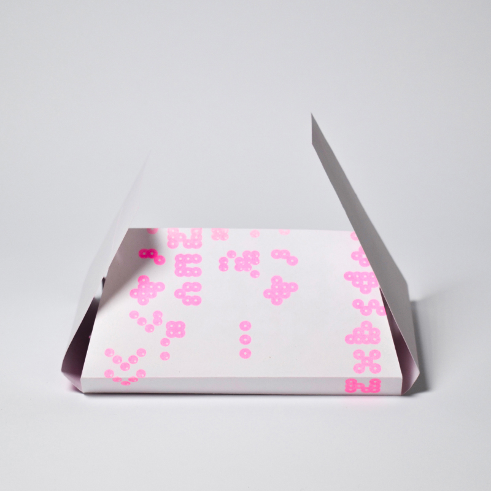
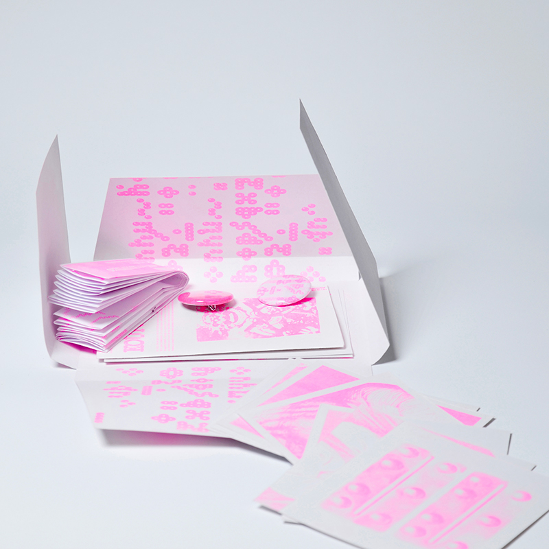
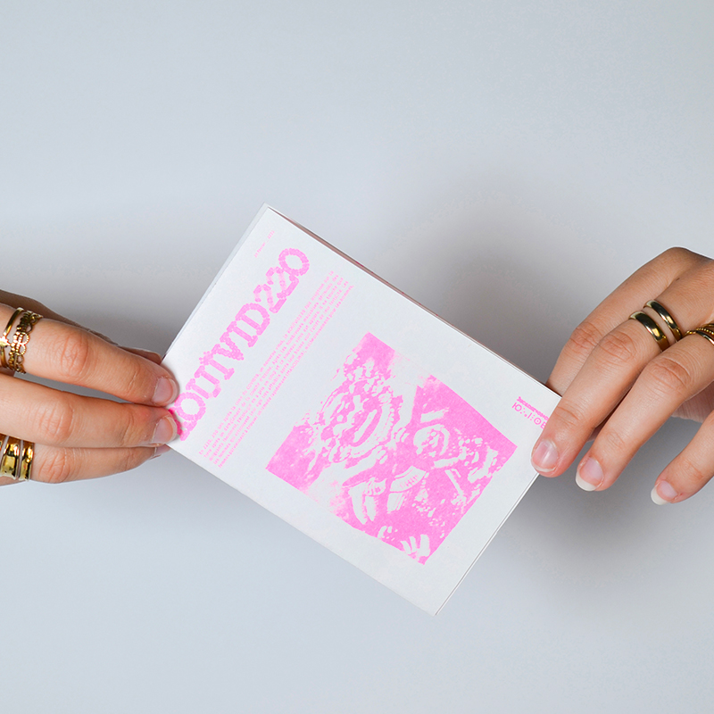
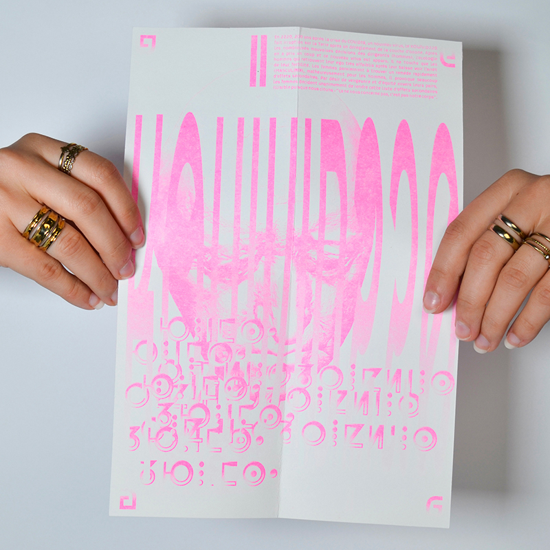
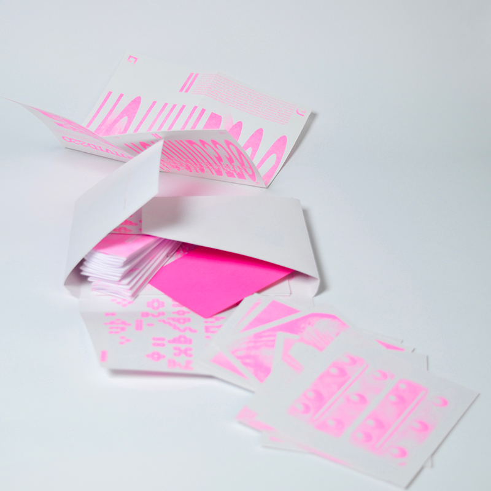
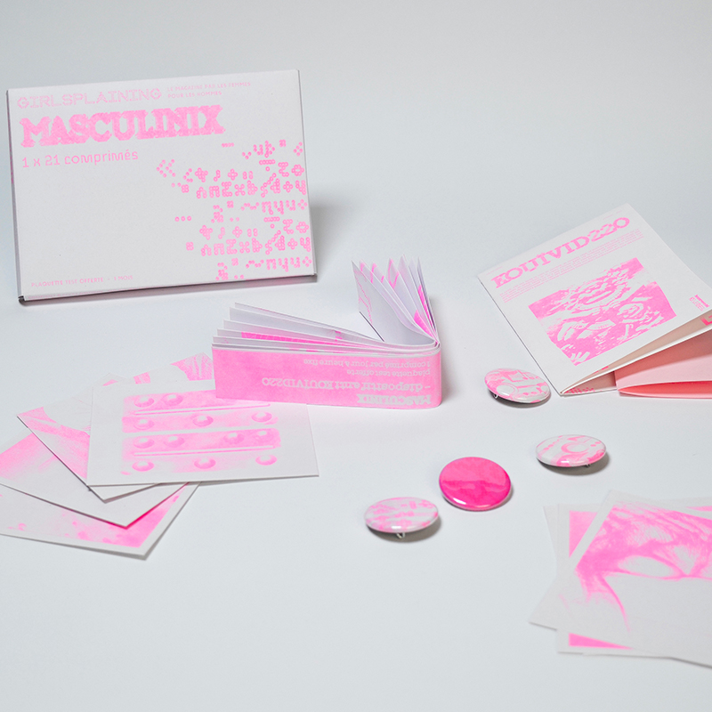
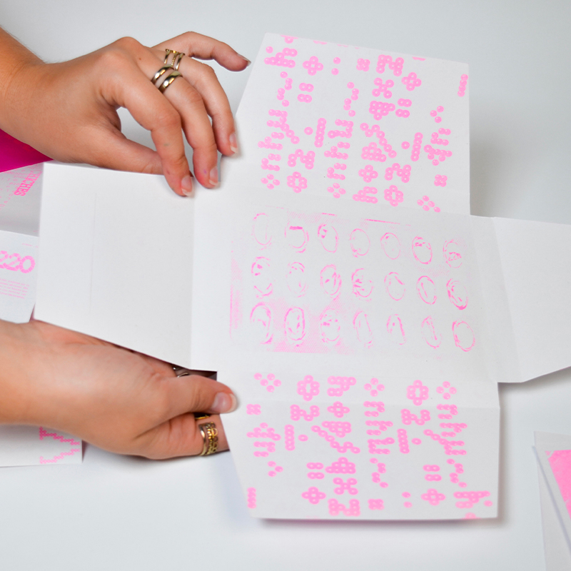
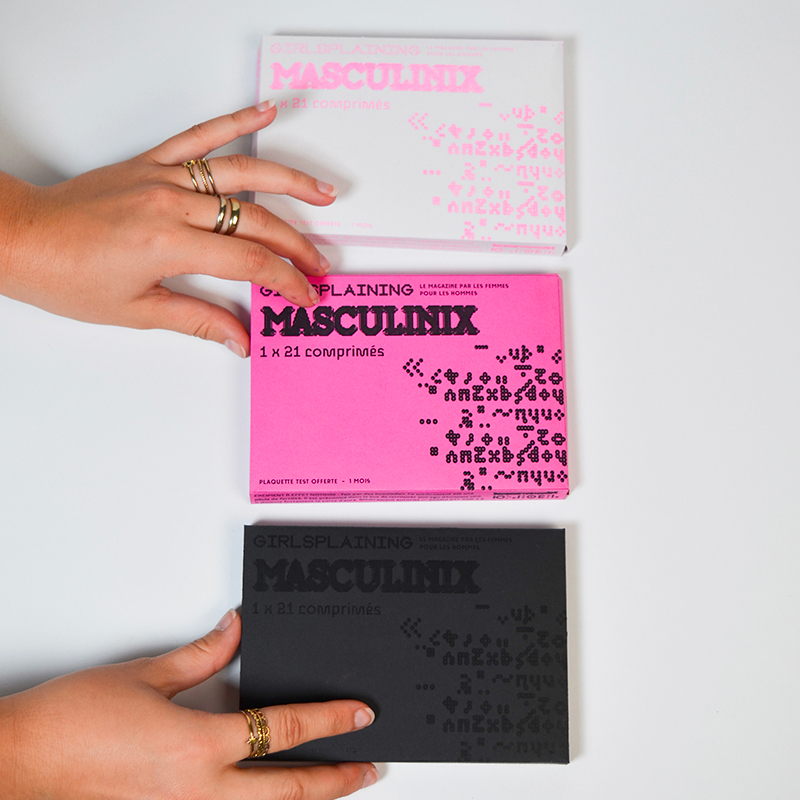
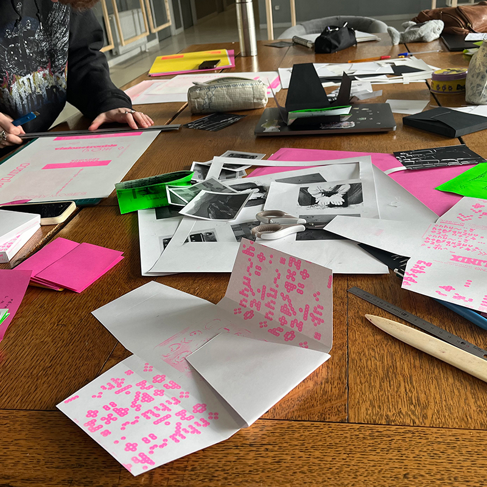
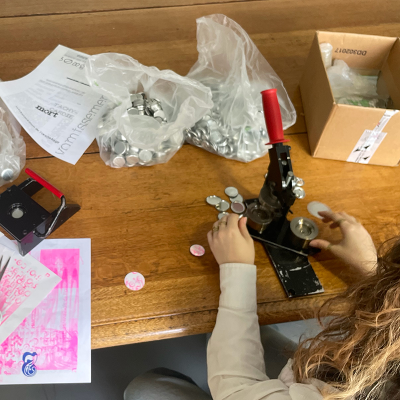

Masculinix
Risographie
2026
Workshop Futurzine avec Adrien Herzog.
Création en groupe d’une édition fictive du futur. Propos ironique en comparaison aux pilules contraceptives actuelles des femmes.
Impression monochrome en rizographie, travail sur le rapport texte-image, mise en page Indesign / Illustrator et réflexion quand aux modalités d’impressions. Comprends une jackette et «reliure» pliage : notice, petites cartes, autocollants et pin’s à l’intérieur.









